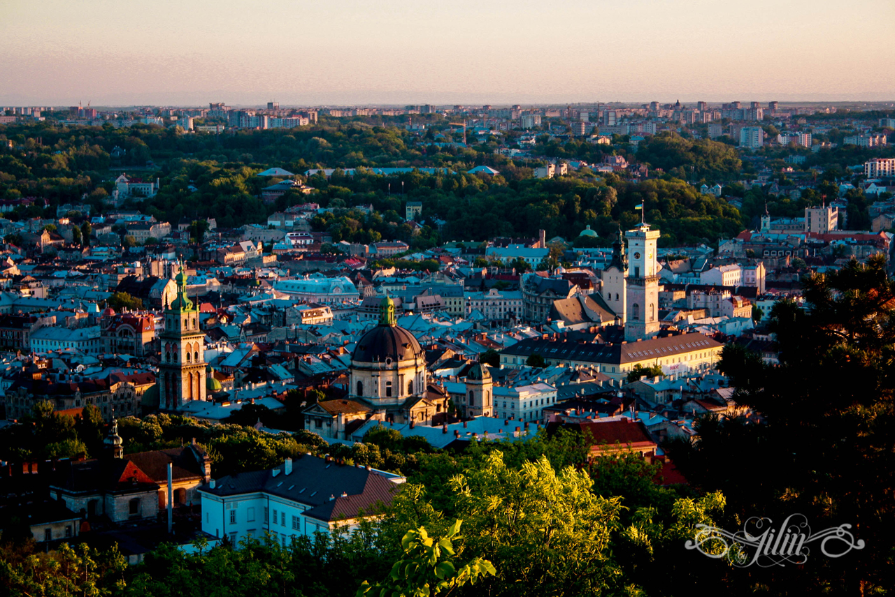

Львів - місто, яке зачаровує з першого погляду. Кожна вуличка Львова наповнена стародавнім шармом, ароматами кави, духом романтики і архітектурною довершеністю. Кожен його елемент приховує цікаві історії та інтригуючі загадкові легенди. Львів - це культурна столиці України, Львів неповторний та незмінний, Львів - історія, що втілена у силуетах його архітектурних композицій. Це місто, яке "охороняють" кам'яні благородні леви та яке змусить Вас повірити в мрію. Загадковості Львова не має меж.
